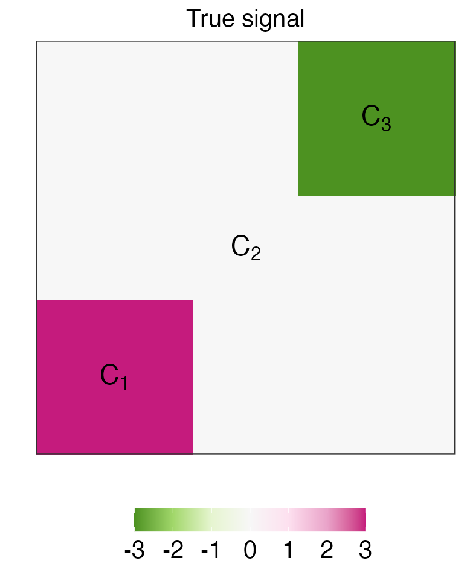
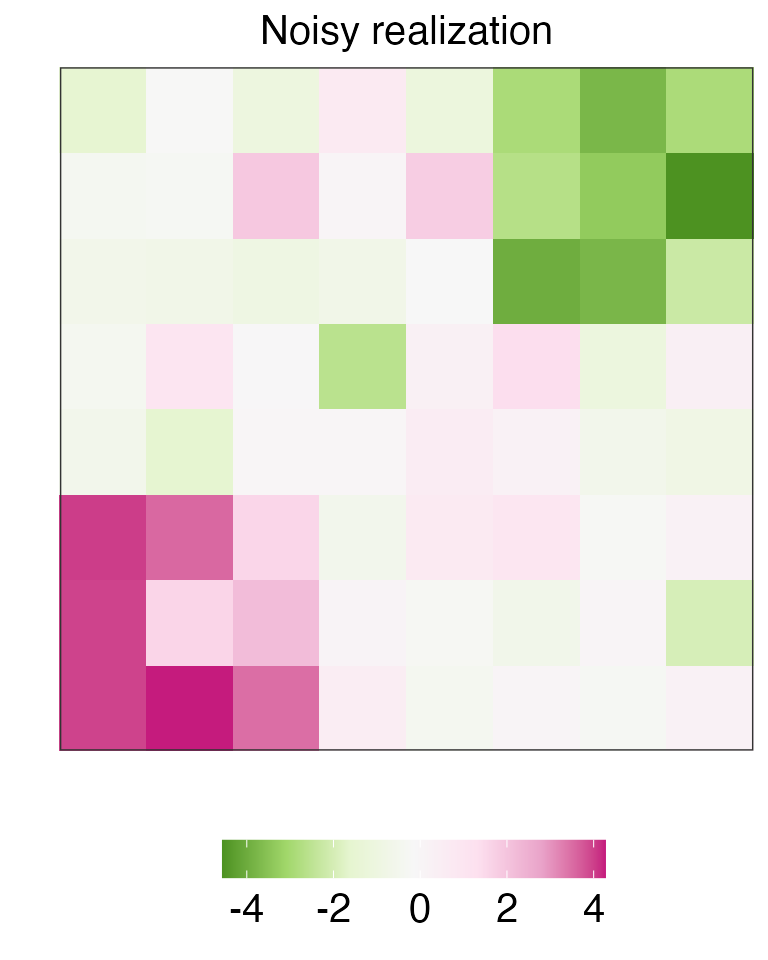
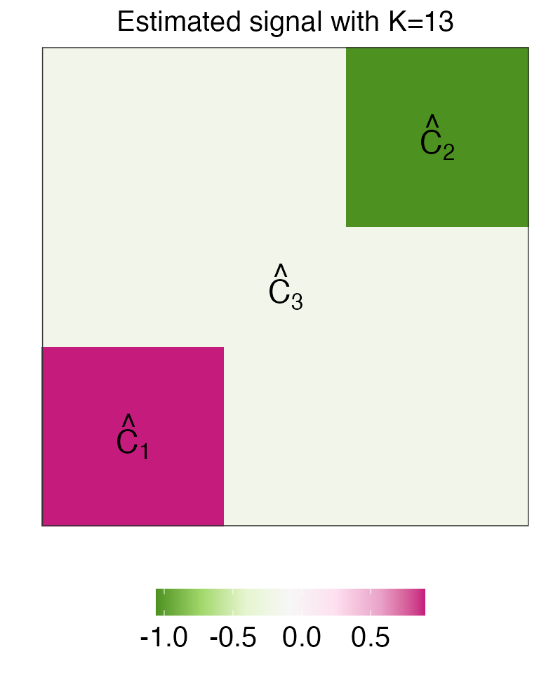

Tutorials.RmdIn this tutorial, we demonstrate basic use of the PGInference package.
First we load relevant packages:
We first construct a signal that is piecewise constant on an eight by eight grid graph, with three true connected components of \(\beta\), which take on values of \(-3\), \(0\), and \(3\), respectively.
lev1 <- 0 # mean for group 1
lev2 <- 3 # mean (absolute value) for group 2/3
sigma <- 1 # level of noise
nn <- 8 # grid size
Dmat <- graph2D_Dmat(nn^2) # generate D matrix for the 2D fused lasso
# Create the underlying signal
A <- matrix(lev1, ncol=nn, nrow = nn)
A[1:round(nn/3),1:round(nn/3)] <- 1*lev2
A[(nn-2):(nn),(nn-2):(nn)] <- -1*lev2
A_true_value_plot <- data.frame(expand.grid(c(1:8),c(1:8)), z = c(A))
ggplot(A_true_value_plot, aes(x=Var1, y=Var2, fill = z)) +
geom_tile() +
xlab("") + ylab("") +
ggtitle("True signal")+
scale_fill_distiller(palette = "PiYG")+
theme_bw()+
theme(plot.title=element_text(size=15,hjust = 0.5),
axis.text.y=element_text(size=15),
axis.text.x=element_text(size=15),
legend.position="bottom",
legend.title = element_blank(),
legend.text = element_text(size=15),
axis.title=element_text(size=15),
strip.text.y = element_text(size=15,hjust=0,vjust = 1,angle=180,face="bold"))+
scale_x_discrete(expand = c(0,0)) +
scale_y_discrete(expand = c(0,0)) +
annotate("text",x = 2 ,y = 2, label = TeX("$C_1$"),parse=TRUE,size=6)+
annotate("text",x = 7 ,y = 7, label = TeX("$C_3$"),parse=TRUE,size=6)+
annotate("text",x = 4.5 ,y = 4.5, label = TeX("$C_2$"),parse=TRUE,size=6)+
guides(fill = guide_colourbar(barwidth = 10, barheight = 1))
We generated data on this grid according to the model \(Y_i = \beta_i + \epsilon_i, \epsilon_i \overset{i.i.d.}{\sim} N(0, \sigma^2), \; i = 1,\ldots, 64\) and display the observation below.
set.seed(2005)
A.noisy <- A + rnorm(nn^2,mean=0,sd=sigma)
y0 <- do.call(c,lapply(1:nrow(A.noisy),function(irow)A.noisy[irow,]))
A_noisy_value_plot <- data.frame(expand.grid(c(1:8),c(1:8)), z = c(A.noisy))
ggplot(A_noisy_value_plot, aes(Var1, Var2, fill = z)) +
geom_tile() +
xlab("") + ylab("") +
ggtitle("Noisy realization")+
scale_fill_distiller(palette = "PiYG")+
theme_bw()+
theme(plot.title=element_text(size=15,hjust = 0.5),
axis.text.y=element_text(size=15),
axis.text.x=element_text(size=15),
legend.position="bottom",
legend.title = element_blank(),
# axis.ticks.y=element_blank(),
legend.text = element_text(size=15),
axis.title=element_text(size=15),
strip.text.y = element_text(size=15,hjust=0,vjust = 1,angle=180,face="bold"))+
scale_x_discrete(expand = c(0,0)) +
scale_y_discrete(expand = c(0,0))+
guides(fill = guide_colourbar(barwidth = 10, barheight = 1))
In the code below, we use the fusedlasso function in the genlasso package to explore the estimate signals using the graph fused lasso. We display the estimate \(\hat{\beta}\) after 13 steps in the figure below. Note that on this particular dataset, \(K=13\) corresponds to \(\lambda\in(4.73,3.42)\).
K_init = 13
complete_sol <- fusedlasso(y=y0,D=Dmat,maxsteps=50)
cat("lambda range", complete_sol$lambda[K_init-1],complete_sol$lambda[K_init],"\n")
#> lambda range 4.728762 3.422854
beta_hat <- complete_sol$beta[,13]
A_estimate_value_plot <- data.frame(expand.grid(c(1:8),c(1:8)), z = c(beta_hat))
ggplot(A_estimate_value_plot, aes(Var1, Var2, fill = z)) +
geom_tile() +
xlab("") + ylab("") +
ggtitle("Estimated signal with K=13")+
scale_fill_distiller(palette = "PiYG")+
theme_bw()+
theme(plot.title=element_text(size=15,hjust = 0.5),
axis.text.y=element_text(size=15),
axis.text.x=element_text(size=15),
legend.position="bottom",
legend.title = element_blank(),
legend.text = element_text(size=15),
axis.title=element_text(size=15),
strip.text.y = element_text(size=15,hjust=0,vjust = 1,angle=180,face="bold"))+
scale_x_discrete(expand = c(0,0)) +
scale_y_discrete(expand = c(0,0))+
annotate("text",x = 2 ,y = 2, label = TeX("$\\hat{C}_1$"),parse=TRUE,size=6)+
annotate("text",x = 7 ,y = 7, label = TeX("$\\hat{C}_3$"),parse=TRUE,size=6)+
annotate("text",x = 4.5 ,y = 4.5, label = TeX("$\\hat{C}_2$"),parse=TRUE,size=6)+
guides(fill = guide_colourbar(barwidth = 10, barheight = 1))
In this section, we demonstrate how to use our software to obtain \(p\)-values and confidence intervals for the difference in means of connected components 1 and 3.
Recall that for a given \(\hat\tau_j\), our proposed \(p\)-value for testing the null hypothesis \(H_0: \nu^\top \beta = 0\) can be expressed as \(\mathbb{P}\left(|\phi| \geq |\nu^\top y| \;\middle|\; \phi \in \mathcal{S}_{C_1,C_2},\) where \(\mathcal{S}_{C_1,C_2}\) is the set of values \(\phi\) such that performing the graph fused lasso on the perturbed dataset \(y'(\phi)\) leads to a set of connected components that include \(\hat{C}_1\) and \(\hat{C}_2\) (see details in the technical details section).
The code below demonstrates how to use the function fusedlasso_inf, which estimates the connected components with \(K\)-step dual-path algorithm and performs inference on the specified two connected components based on the input data. After performing inference with \(K=13\) in this example, we use the summary method to get a summary (in the form of a data frame) of the results.
result_demo <- fusedlasso_inf(y=y0, D=Dmat, c1=1, c2=3, method="K", sigma=sigma, K=K_init,
compute_ci = TRUE)
summary(result_demo)
#> cluster_1 cluster_2 diff_in_means pval_c1c2 pval_hyun LCB UCB
#> 1 1 3 -3.152508 1.430406e-12 0.2545821 -3.866876 -2.434958We see that because \(p_{Hyun}\) conditions on too much information, its power is extremely low, so that the null hypothesis cannot be rejected. By contrast, \(p_{C_1,C_2}\) can easily this null hypothesis.
In addition to the aforementioned key functions, the package also includes the following helper functions: construct_v and estimate_spike_by_firing_rate.
The function construct_v generates the contrast vector \(\nu\) for the null hypothesis \(H_0:\nu^\top c = 0\). We will demonstrate below that \(\nu^\top c\) is indeed the change in calcium in the neighborhood of a given spike \(\hat\tau_j\). We consider the case where there is no spike, i.e., the calcium is decaying exponentially, and we would expect \(\nu^\top c=0\). In the example below, we set \(c_1 = 3\), \(c_t = 0.98 c_{t-1}, \; t=2,\ldots, 50\), \(\hat\tau_j = 20\), and \(h=5\).
gam <- 0.98
T_length <- 50
calcium <- rep(3 * gam ^(0:(T_length - 1)))
thj <- 20
h <- 5We see that \(\nu^\top c\) indeed evaluates to 0, up to machine precision.
We have taken \(\lambda\) to be known in this tutorial. Choosing an appropriate \(\lambda\) value is critical to the quality of estimated spikes. The function estimate_spike_by_firing_rate allows us to specify a target firing rate, and then to find the value of \(\lambda\) that yields a number of estimated spikes that is close to that target firing rate.
In the example below, we simulate from an AR-1 model with firing rate 0.05, i.e., we expect to have 5 spikes per 100 timesteps on average.
gam <- 0.98
T_length <- 1000
firing_rate <- 0.05
target_rate <- 0.05
sigma <- 0.1